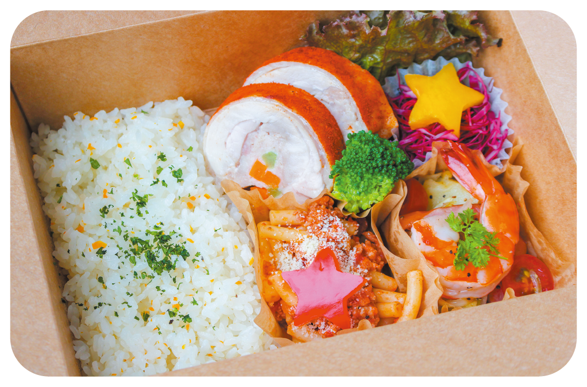
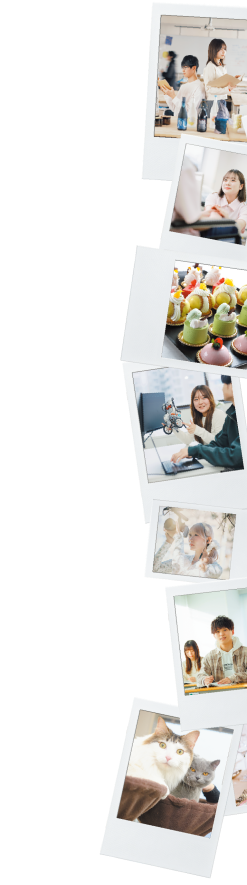
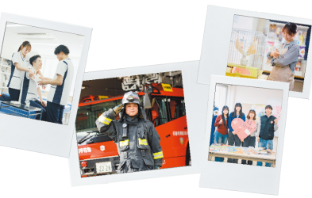
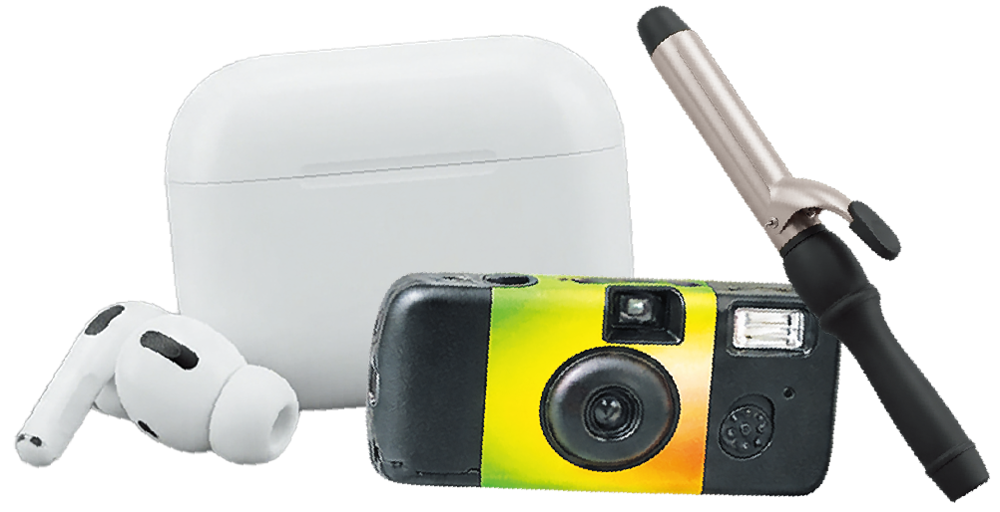

ランチBOX＆
ケーキビュッフェ
MCL FOOD特製ランチボックスとケーキを、参加者の皆さまにお振る舞い！
開催日程

A SPECIAL CHRISTMAS
今回のオープンキャンパスでは、
全28種類のワークショップから
最大2つの体験を選べます。
同じ分野を2回楽しむことも、
1つの分野にじっくり
取り組むこともできます。
あなたの新しい可能性が
きらめく時間になりますように。
SCHEDULE
希望者は個別相談も可能です

CHRISTMAS SPECIAL

MCL FOOD特製ランチボックスとケーキを、参加者の皆さまにお振る舞い！

何が当たるかは当日のお楽しみ。事前予約で抽選チケットをGET！
※写真は景品のイメージです。全28種類の体験プログラム。
「やってみたい」から選んでみよう！
各体験は定員になり次第、受付終了です。
分野で絞り込む
28件の体験メニューを表示しています
AI・情報IT分野
マイコン制御の基礎を学び、自分だけのイルミネーションを設計しよう！
担当：MCL盛岡情報ビジネス＆デザイン専門学校
3DCG分野
モデリングツールを使ってお菓子の家の飾り付けをしてみよう！
担当：MCL盛岡情報ビジネス＆デザイン専門学校
グラフィックデザイン分野
カッターの使い方や配色を意識してクリスマスカードを作ってみよう！
担当：MCL盛岡情報ビジネス＆デザイン専門学校
マンガ・イラスト分野
カードに使える簡単なイラストの描き方を学んでみよう！
担当：MCL盛岡情報ビジネス＆デザイン専門学校
ビジネス分野
商品開発チームになりきり、クリスマスケーキの「原価」を計算したうえでいくらで売るかを話し合って決めてみよう！
担当：MCL盛岡情報ビジネス＆デザイン専門学校
ゲーム分野
ゲームエンジン「Unity」を使った3Dロボットゲームの開発体験を行います。
担当：MCL盛岡情報ビジネス＆デザイン専門学校
建築・インテリア分野
スチレンボードを使って建築模型を作ってみよう！
担当：MCL盛岡情報ビジネス＆デザイン専門学校
韓国語分野
韓国の冬の文化や過ごし方を学びながら、韓国で流行中のオリジナルグッズを作成しよう！
担当：MCL盛岡外語観光＆ブライダル専門学校
ホテル分野
魅せるサービス、フルーツを色々な形にカットしてお皿に盛りつけてみよう！
担当：MCL盛岡外語観光＆ブライダル専門学校
ブライダル分野
テーブルの装飾やフォトスポットをChristmas仕様に装飾してみよう！
担当：MCL盛岡外語観光＆ブライダル専門学校
英語・トラベル分野
観光×英語の問題を解いてキーワードを読み解き、オリジナルチャームを作成しよう！
担当：MCL盛岡外語観光＆ブライダル専門学校
福祉・保育分野
廃材を利用して世界にひとつだけのランタンを作ろう！
担当：MCL盛岡医療福祉スポーツ専門学校
スポーツ分野
マットピラティスや呼吸をベースとした体幹トレーニングにチャレンジ！
動きやすい服装でご参加ください
担当：MCL盛岡医療福祉スポーツ専門学校
医療事務分野
処方薬のピッキングを体験してみよう！
担当：MCL盛岡医療福祉スポーツ専門学校
ビジネス分野
自分のこれまでを明るく捉えなおし、これからの明るい人生をイメージしてみよう！
担当：MCL盛岡医療福祉スポーツ専門学校
公務員分野
暗号を解いてプレゼントを届ける謎解きワークショップ
担当：MCL盛岡公務員法律専門学校
トリマー分野
愛犬へのプレゼントにもぴったり♪クリスマス仕様のチョーカーを作ってみよう！
担当：MCL盛岡ペットワールド専門学校
動物看護分野
お薬の調剤と注射器の扱い方を学ぼう！
担当：MCL盛岡ペットワールド専門学校
動物飼育分野
さまざまな動物の特徴を知り、お店に並ぶようなPOPを作ります。
担当：MCL盛岡ペットワールド専門学校
ドッグトレーナー分野
クリッカーを使って、ドッグトレーニングを体験してみよう！
担当：MCL盛岡ペットワールド専門学校
柔道整復分野
自分だけのオリジナルシップ作りにチャレンジ！
担当：MCL盛岡医療大学校
柔道整復分野
包帯の巻き方を覚えながら、かわいいキャンディバッグを作ります。
担当：MCL盛岡医療大学校
鍼灸分野
寒さに効果的なツボをご紹介♪お灸を体験してみよう！
担当：MCL盛岡医療大学校
鍼灸分野
食べすぎ・ダイエットに効果的な東洋医学的セルフケアをご紹介します！
担当：MCL盛岡医療大学校
歯科衛生分野
冬の必須アイテム オリジナルリップクリームを作ろう！
担当：MCL盛岡医療大学校
歯科衛生分野
歯ブラシをデコレーションして自分だけの歯ブラシを作ろう！
担当：MCL盛岡医療大学校
看護分野
血圧測定と人形を使って赤ちゃんの抱っこを体験してみよう！
担当：MCL盛岡医療大学校
調理分野
鶏肉に具材を包んで、食欲そそるスパイシーなロールチキンを作ろう！
持ち物：エプロン＆バンダナ （※持っていない場合は学校から貸し出しがあります）
担当：MCL菜園調理製菓専門学校
条件に合う体験はありません。
ほかの分野を選んでみてください。
詳細は、申込フォームでご確認ください。
岩手・青森・秋田の各地より
全８ルートで運行します！
第１締切12月14日（月）
最終締切12月17日（木）12:00まで
第1締切までに申し込みのないルートは運行しません。運行確定ルートは最終締切まで予約可能です。運行ルートは各校HP・SNS等で告知いたします。
| 一関駅東口 | 6:45 |
|---|---|
| 水沢駅東口 | 7:35 |
| 北上駅東口 おにけんばい広場 | 8:20 |
| 花巻駅西口 | 9:00 |
| 久慈駅前バスターミナル | 6:30 |
|---|---|
| 岩泉小本駅前 | 7:20 |
| 宮古駅前ロータリー | 8:00 |
| 大野高校正門前 | 7:00 |
|---|---|
| 軽米町役場前 | 7:30 |
| 道の駅おりつめ | 7:50 |
| 二戸駅西口（北桜高校側） | 8:20 |
| 陸前高田市コミュニティホール | 6:45 |
|---|---|
| 薬王堂前（大船渡高校近く） | 7:10 |
| 釜石駅前 | 7:45 |
| ビッグハウス遠野店前 | 8:30 |
| 十和田市民文化センターD51 | 6:20 |
|---|---|
| ビードルプラザ（三沢） | 7:00 |
| イオン下田バス停前（国道沿い） | 7:20 |
| 八戸駅西口バス乗り場 | 7:50 |
| 五所川原駅前 | 6:30 |
|---|---|
| 道の駅つるた | 6:45 |
| 板柳駅前 | 6:55 |
| 弘前駅城東口 | 7:30 |
| 湯沢駅前 | 6:40 |
|---|---|
| 横手駅西口 | 7:15 |
| 大曲駅東口ロータリー前 | 7:50 |
| 角館駅前 | 8:20 |
| 鷹巣駅前 | 7:00 |
|---|---|
| 大館駅前 | 7:30 |
| 十和田南駅前 | 8:05 |
| 鹿角花輪駅前 | 8:30 |
各ルートとも9:45到着予定／帰りは14:00出発。乗降場所・経由地以外での途中下車はできません。申込状況によりバス以外の交通手段をお願いする場合があります。事前予約後のキャンセルはお電話でご連絡ください。
MCL盛岡外語観光＆ブライダル専門学校
MCL盛岡菜園調理製菓専門学校 校舎
〒020-0024
岩手県盛岡市菜園2丁目4-19
MAKE YOUR CHRISTMAS SPECIAL
お申し込みはクリックすると、新しいタブで申込サイトが開きます。